Japan / Ibaraki / Yachiyomachi
Yachiyomachi, Ibaraki: things to do, food and stays
Yachiyomachi · Ibaraki
Yachiyomachi
Highlighted on the Ibaraki map.
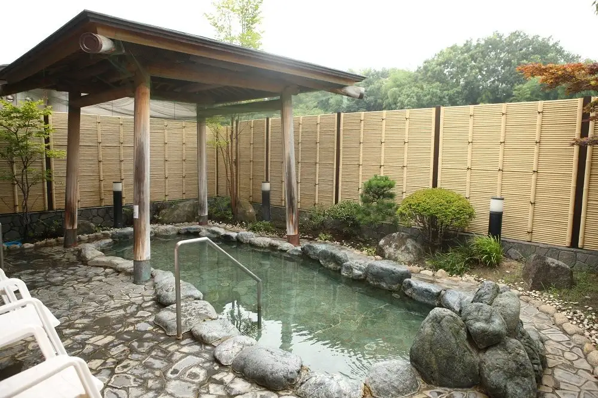
Stay
ビジネス旅館 幸
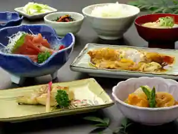
Business Ryokan Sachi
Ryokan inn in Sugaya, Yachiyomachi with business travelers.
Dining
とうふや たかはし
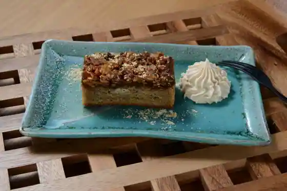
Tofuya Takahashi
菊亭
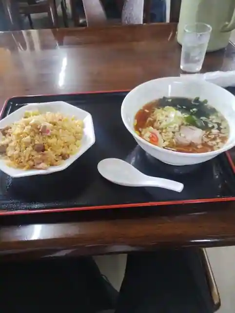
Kikutei
しょうや
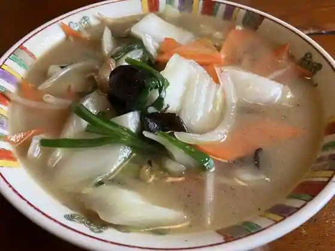
Shoya
らーめん すずらん
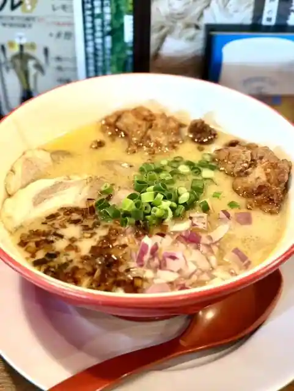
Ramen Suzuran
香文
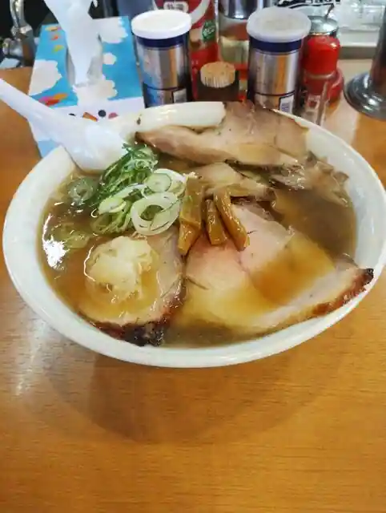
Kobun
桃源
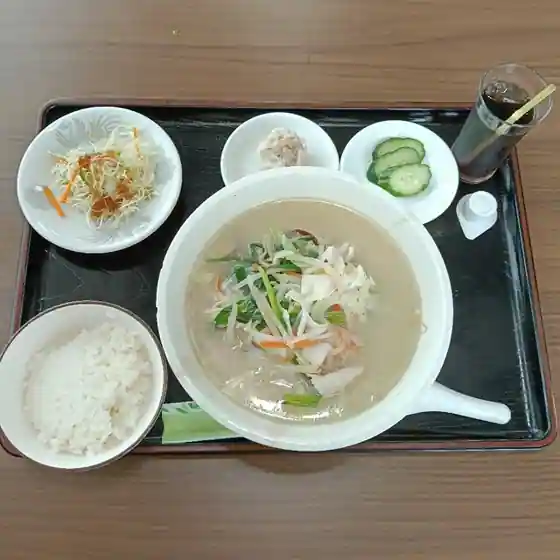
Togen
わぎゅう食堂 くらもち
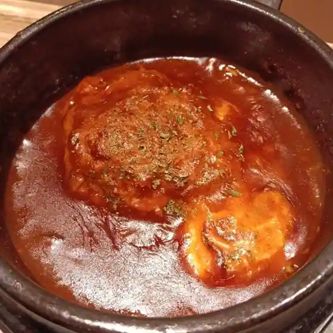
Wagyu Shokudo Kuramochi
らぁめん でんか
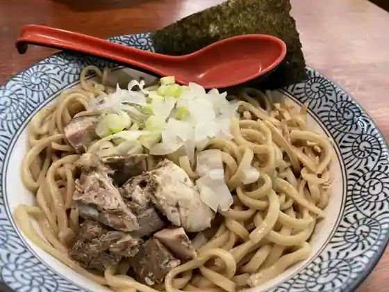
Ramen Denka
結城家
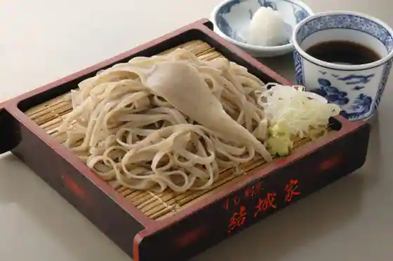
Yuki Ie
とん平
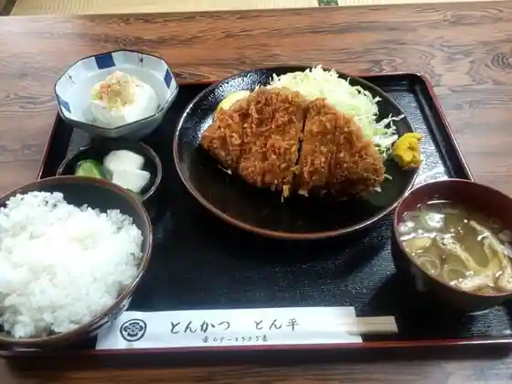
Ton Taira
台湾料理 八福
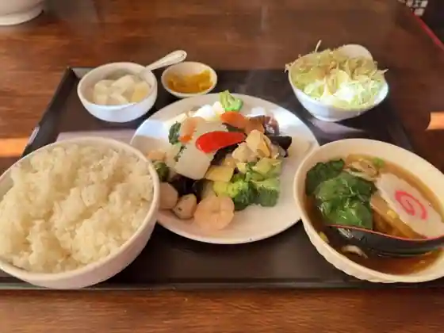
Taiwan Ryori Hachi Fuku
峰本
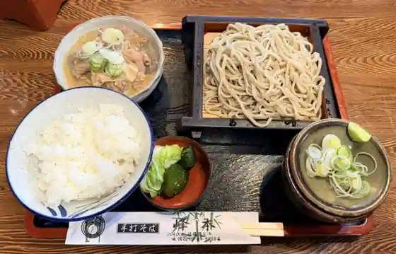
Mine Hon
松華園
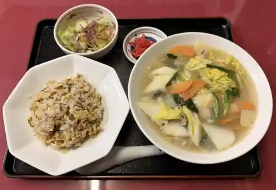
Shoka Sono
海将
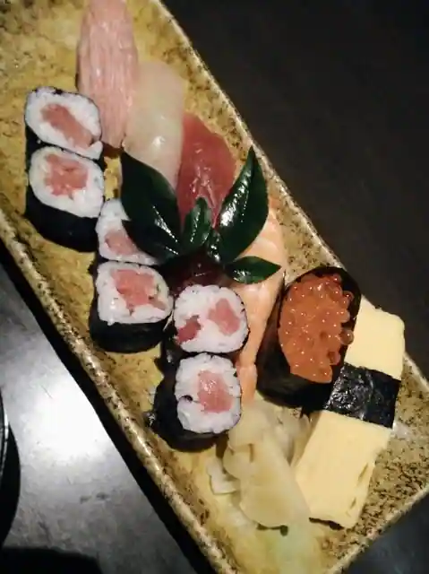
Kaisho
山田ランチ
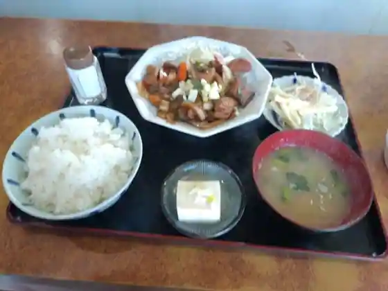
Yamada Ranchi
Farmers Cafe Den園
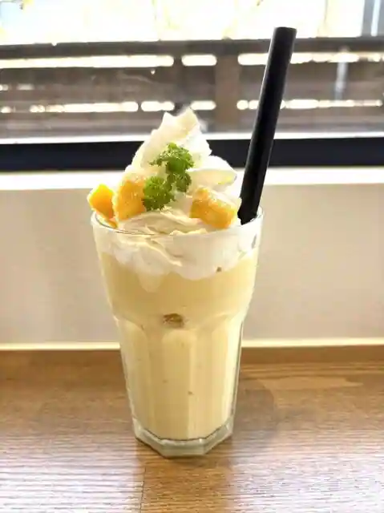
Farmers Cafe Den Sono
LION ROCK
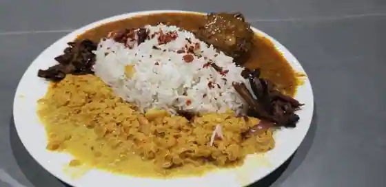
LION ROCK
KING'S Sri Lankan restaurant & spicy
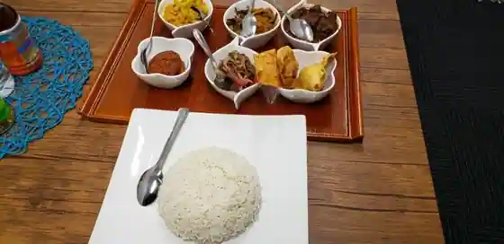
KING'S Sri Lankan restaurant & spicy
Taste of Lanka
Taste of Lanka
Sapa Restaurant
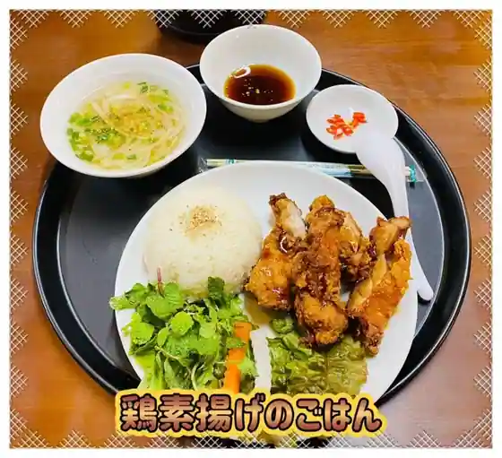
Sapa Restaurant
一休
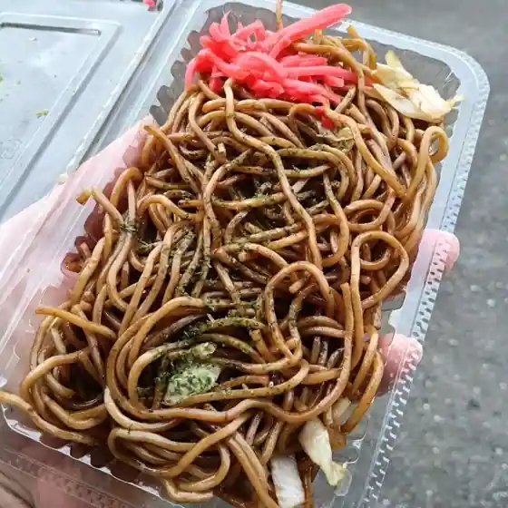
Ikkyu
大久保製菓 八千代支店
Okubo Seika Yachiyo Shi
いっぴん亭
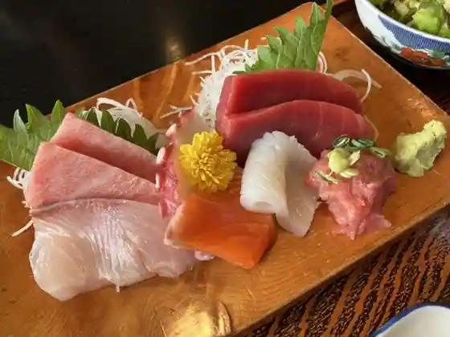
Ippin Tei
活龍 八千代店
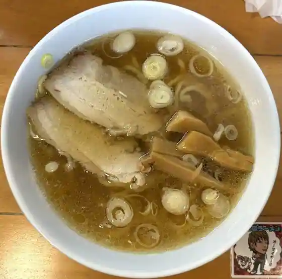
Katsu Ryu Yachiyo
Sights
Yachiyomachi Guriimbirejji Kei Yu Kan (Yachiyo no Yu)
Yachiyomachi Guriimbirejji
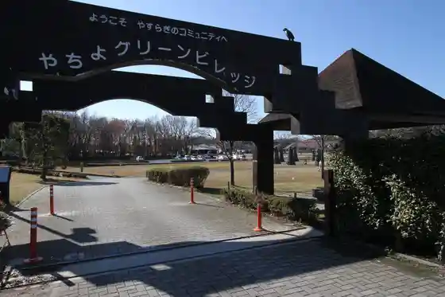
Ku Line Garuten Yachiyomachi
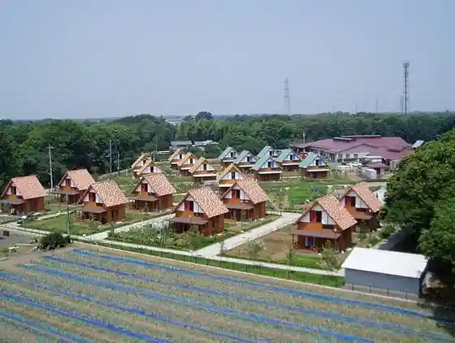
Jun Sai Yachiyo JA Nosambutsu Yachiyomachi Chokubai Tokoro
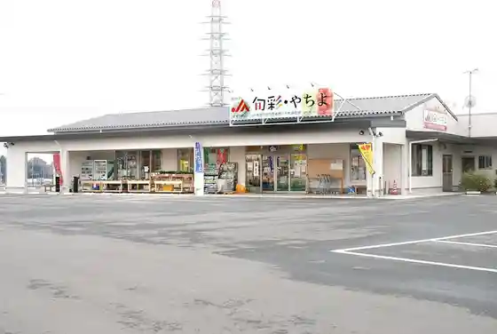